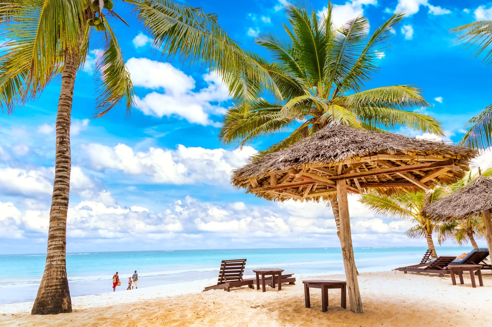
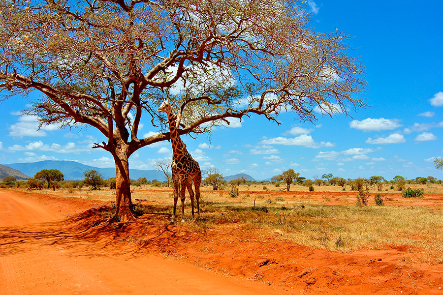

Wakacje w Kenii z Biurem Podróży Dreamly
9672.50 PLN
Wstęp
Zapraszamy Cię na niezapomnianą podróż do Kenii, kraju dzikiej przyrody, zapierających dech w piersiach krajobrazów i fascynującej kultury. Z Biurem Podróży Dreamly odkryjesz wszystkie uroki tego magicznego miejsca, od majestatycznych sawann i pełnych życia parków narodowych, przez malownicze jeziora, aż po białe plaże Oceanu Indyjskiego. Nasze starannie zaplanowane wycieczki zapewnią Ci komfort, bezpieczeństwo i niezapomniane wrażenia.Nairobi - Tętniąca Życiem Stolica
Rozpocznij swoją kenijską przygodę w Nairobi, tętniącej życiem stolicy kraju. Zwiedzaj słynne Muzeum Narodowe Kenii, gdzie poznasz bogatą historię i kulturę regionu. Odwiedź Centrum Żyraf, gdzie będziesz miał okazję spotkać się z tymi majestatycznymi zwierzętami z bliska. Zrelaksuj się w Ogrodzie Botanicznym Karura Forest i zanurz się w lokalnej atmosferze na targu Maasai.Park Narodowy Masai Mara - Serce Safari
Odkryj prawdziwe serce safari w Parku Narodowym Masai Mara, jednym z najbardziej znanych rezerwatów przyrody na świecie. Podczas niezapomnianego safari będziesz miał szansę zobaczyć Wielką Piątkę (lwy, słonie, lamparty, nosorożce i bawoły) w ich naturalnym środowisku. Odwiedź wioskę Maasai i poznaj tradycje oraz kulturę tego dumnego plemienia.Jezioro Nakuru - Raj dla Miłośników Ptaków
Następnie udaj się do Parku Narodowego Jeziora Nakuru, znanego z niezwykłej różnorodności ptaków, w tym tysięcy flamingów, które nadają jezioru charakterystyczny różowy kolor. Oprócz ptaków, będziesz miał okazję zobaczyć nosorożce, zebry, żyrafy i wiele innych dzikich zwierząt. Podziwiaj malownicze widoki i zanurz się w ciszy i spokoju tego wyjątkowego miejsca.Góry Aberdare - Wysokogórska Przyroda
Odwiedź Góry Aberdare, gdzie możesz podziwiać zapierające dech w piersiach krajobrazy, gęste lasy i imponujące wodospady. Wybierz się na pieszą wędrówkę po parkowych szlakach, odkrywając bogactwo flory i fauny tego regionu. Nocleg w unikalnych hotelach, takich jak Ark Lodge, gdzie możesz obserwować dzikie zwierzęta z komfortu swojego pokoju.Tsavo - Kraina Czerwonej Ziemi
Odkryj surowe piękno Parku Narodowego Tsavo, jednego z największych rezerwatów przyrody w Kenii. Park jest znany z „czerwonych słoni” i niezwykłych formacji skalnych. Podczas safari będziesz miał okazję zobaczyć lwy, bawoły, gepardy i wiele innych zwierząt. Odwiedź malownicze Mzima Springs, gdzie możesz obserwować hipopotamy i krokodyle w krystalicznie czystej wodzie.Komfort i Bezpieczeństwo
Biuro Podróży Dreamly dba o to, aby Twoje wakacje były nie tylko niezapomniane, ale również komfortowe i bezpieczne. Nasze wycieczki są starannie zaplanowane i prowadzone przez doświadczonych przewodników, którzy zapewnią Ci wszechstronną opiekę i niezapomniane wrażenia. Oferujemy szeroki wybór zakwaterowania - od luksusowych hoteli po przytulne pensjonaty, aby spełnić oczekiwania każdego podróżnika.Podsumowanie
Dołącz do nas i odkryj dziką i piękną Kenię z Biurem Podróży Dreamly. Gwarantujemy wyjątkowe wrażenia, niezapomniane chwile i profesjonalną opiekę na każdym etapie podróży. Zarezerwuj swoje wymarzone wakacje już dziś i poznaj bogactwo przyrody, kultury oraz malownicze krajobrazy Kenii!

